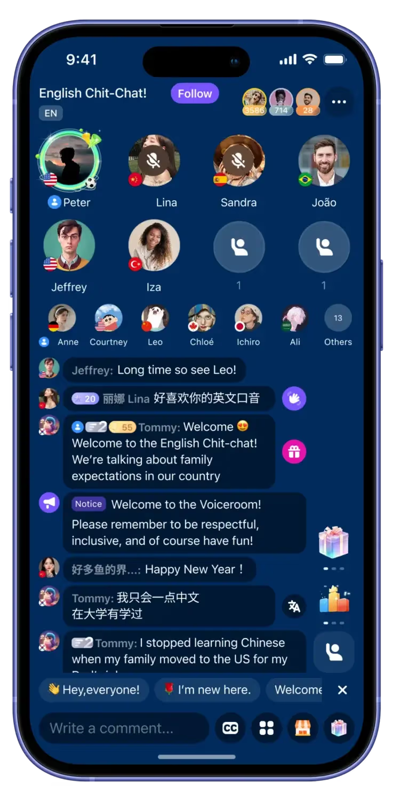

밍글 소개
외국인 친구를 사귀고 싶을 때
사용하는 앱입니다
밍글은 단순한 번역기가 아니라
외국인과 만나고, 대화하고, 관계를 이어갈 때 발생하는
모든 문제를 해결하는 서비스가 되고 싶습니다.
저희가 주목한 문제
고객이 겪는 가장 큰 문제는
언어 장벽을 넘기 어렵다는 점입니다
AI 기술이 빠르게 발전하고 있지만 여전히 언어 장벽은 남아 있습니다.
실제 대화가 끊기지 않고 통번역되는 경험은 아직 전무합니다.
제안하는 해결책
그래서 소셜링을 위한
통번역 서비스를 만듭니다
통번역이 필요한 상황은 온오프라인을 가리지 않습니다.
그 모든 버티컬에서 사용가능한 서비스를 만듭니다.
타겟 고객 1
저희의 첫 타겟 고객은
헬로톡 보이스룸 유저입니다
헬로톡 보이스룸 서비스는 빠르게 성장중이지만,
통번역을 몹시 제한적으로만 지원합니다.
그래서 대부분의 유저는 쉽게 이탈합니다.

타겟 고객 2
두 번째는 글로벌 게임의
디스코드 커뮤니티들입니다
글로벌 서버 운영이 흔해지면서 실시간 통번역에 대한 수요도 늘었습니다.
하지만 디스코드는 통번역을 해주지 않아 강제 영어교육이 되곤 합니다.
익스텐션이 난무하지만 그나마도 PC환경에서만 적용가능할 뿐입니다.


타겟 고객 3
세 번째는 외국인 여행객을 대하는
사장님들입니다
기존 번역 서비스의 한계
기존 서비스는 대부분 한 턴씩 멈춰서 번역되고, 상대가 적극적으로 협조하지 않으면 대화가 이어지지 않습니다. 결국 정말 필요한 순간이 아니면 사람들은 소통 자체를 포기합니다.
열두 가지 공백
실시간 대화 불가, 자동 언어 전환 부재, 3개 이상 언어 처리 불가, 모바일 경험 부족, 높은 가격, 대화형 UI 미흡, STT/TTS 결손, 성능 한계, 백그라운드 미지원, 통화·라디오와 동시 실행 불가, 느린 개발 속도, 기록 미축적까지 문제가 겹쳐 있습니다.
왜 지금 가능한가
과거에는 실시간 음성 처리, 다국어 동시 번역, 낮은 지연 시간, 합리적 비용을 동시에 만족시키기 어려웠습니다. 그러나 최근 1~2년의 AI 발전으로 2026년 초 기준 시간당 300원 이하 비용 구조까지 가능해졌습니다.
좋은 번역기만으로는 부족합니다
외국인을 사귀는 일이 어려운 이유는 말이 안 통해서이기도 하지만, 애초에 연결되기 어렵기 때문이기도 합니다. 고객에게는 번역 도구만이 아니라 연결과 교류를 가능하게 하는 구조가 함께 필요합니다.
소셜 서비스도 반대로 부족합니다
헬로톡, 디스코드, 인스타그램, 틴더 같은 글로벌 연결 서비스는 관계 형성은 제공하지만 실시간 통번역은 제공하지 않거나 몹시 제한적입니다. 번역 서비스는 관계를 못 만들고, 소셜 서비스는 언어 장벽을 못 없앴습니다.
Mingle의 정의
그래서 저희는 실시간 통번역 기능을 탑재한 SNS를 만듭니다. Mingle은 외국인 친구를 사귀기 위해 필요한 환경 전체를 제공하는 AI 네이티브 메신저를 지향합니다.
제품이 주는 가치
필요한 상황에서, 원하는 형태로, 끊기지 않는 통번역 경험을 제공합니다. 번역은 일회성 결과가 아니라 대화방, 메시징, 관계 유지까지 이어지는 사용자 경험의 출발점이 됩니다.
실행 속도
2026년 2월 초 프리토타이핑을 시작했고, 간단한 광고 테스트로 초기 수요를 검증한 뒤 2월 중순 본격 개발에 착수했습니다. 연휴를 제외하면 약 2주 만에 MVP를 완성했고 3월 초 첫 앱 심사를 등록했습니다.
진입 전략
첫 단계는 버티컬 특화 통번역 경험입니다. 고객이 실제로 겪는 맥락에 맞춰 번역 경험을 재설계하고, 기존 번역 서비스가 해결하지 못한 상황별 사용성을 먼저 장악합니다.
초기 타겟 버티컬
헬로톡 보이스룸, 공항·택시 같은 여행 직후 현장, 여행 전 현지인 매칭, 글로벌 게임 디스코드 보이스톡, 관광·운송·항공 응대, 글로벌 컨퍼런스 청취, 모바일 회의록, 서비스 업종의 외국인 응대까지 초기 진입점은 매우 다양합니다.
확장 전략
번역은 출발점이고, 궁극적인 목표는 관계의 형성과 지속입니다. Mingle은 단순한 번역기가 아니라 AI 네이티브 메신저이자 소셜 플랫폼으로 확장됩니다.
바이럴 루프
대화방 공유와 실시간 동기화, 번역 대화의 영구 채팅방 전환, 온라인 보이스룸과 통화, 음성 기반 식별, 프로필과 포스팅이 한 흐름으로 연결됩니다. 오프라인 만남이 온라인 관계로 이어지고, 그 관계가 다시 새로운 사용자 유입을 만듭니다.
해자 구축 전략
초기에는 빠른 확장을 위해 적자를 감수하고 최저가 수준으로 통번역을 제공합니다. 목표는 단순 사용자 수가 아니라 관계 네트워크를 먼저 형성하고, 번역된 대화가 축적되는 AI 네이티브 메신저로 발전하는 것입니다.
향후 핵심 검증 지표
재사용률, 친구 초대에 따른 바이럴 효과, 네트워크 확장, 시간당 500원 유료 전환, 프로필 완성도, 외국인 매칭을 위한 탐색 행동, 포스팅과 소셜 활동까지를 핵심 지표로 검증합니다.
Where to See Mingle
Landing: mingle-landing.vercel.app/gaming · mingle-landing.vercel.app/normal
GitHub: github.com/minglelabs/mingle
App Store: apps.apple.com/app/id6759795134 · Google Play:
play.google.com/store/apps/details?id=com.minglelabs.mingle.rn